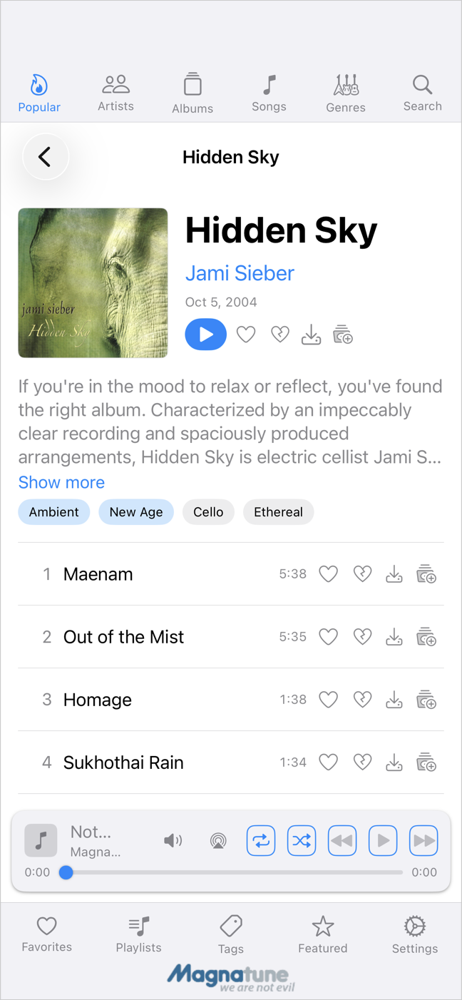
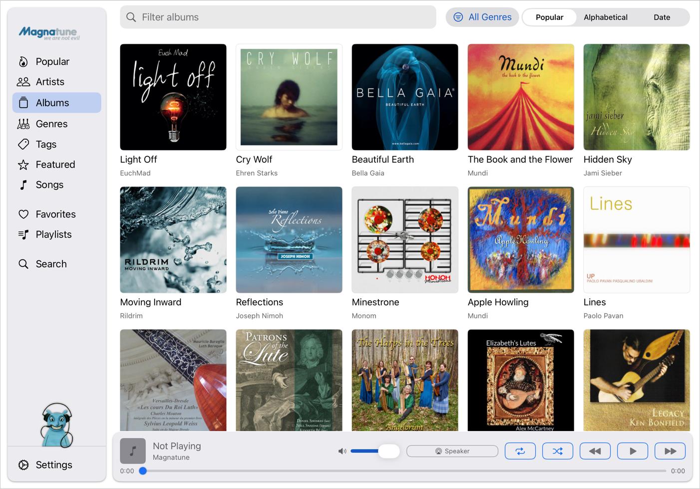

What it is
Magnatune (magnatune.com) streams a catalog of independent-label albums as AAC. Members can stream no-announcement and lossless tiers and download albums. This project is a set of native clients for the service plus a rebuilt website.
Clients
- iOS / iPadOS / Mac (magnatune-app) — SwiftUI. Browse the catalog (Popular, Artists, Albums, Genres, Tags, Featured, Search), play with background audio and lock-screen controls, manage favorites and playlists, and — for members — stream the no-announcement / lossless tiers and download albums.
- Android (magnatune-android) — Kotlin / Jetpack Compose / Media3, a port of the iOS app. Playback via Media3/ExoPlayer with a persistent mini-player, queue, shuffle, and crossfade (dual-player engine); Google Cast and AirPlay discovery; LAN peer sync to remote-control other instances on the same Wi-Fi. Android 8.0 (API 26) or newer.
- Website — the magnatune.com site.
Screenshots

